Ator, compositor, dramaturgo, cantor, produtor e letrista.
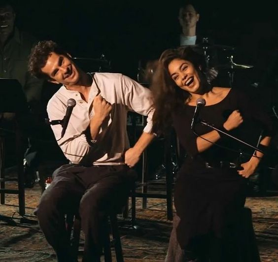
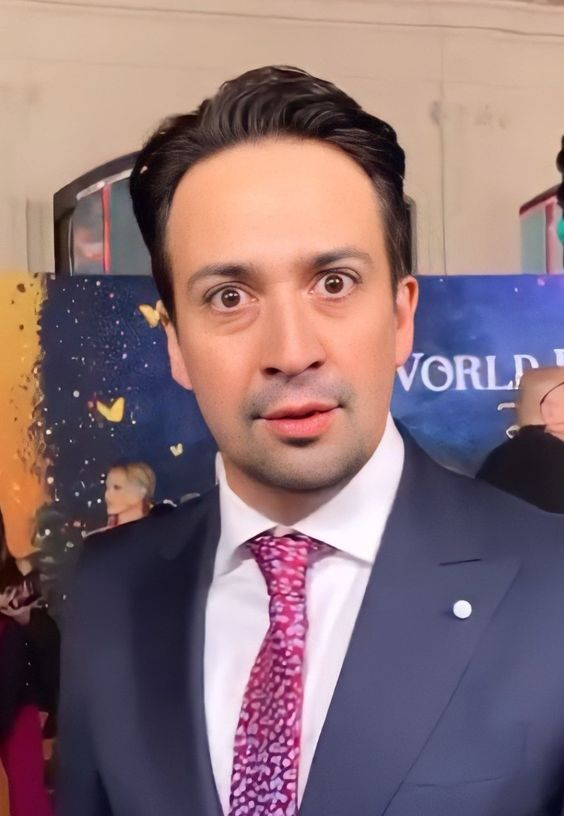

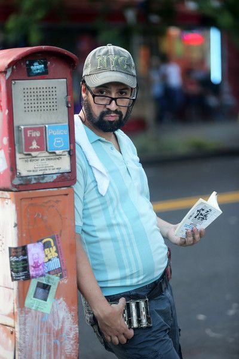
O filme é sobre uma comunidade latina no bairro Washington Heights em Nova York.
Foi lançado em 2021 após ter sido adiado devido à pandemia de COVID-19.
É baseado no musical de 2007 de Lin-Manuel Miranda e o protagosnista foi o Anthony Ramos com quem Miranda já havia trabalhado antes em Hamilton.
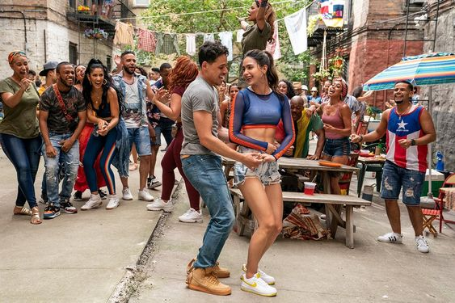
MOANA
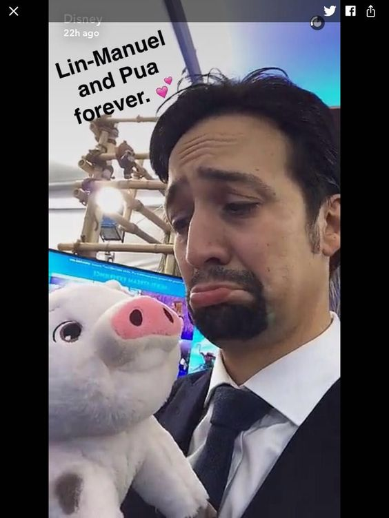
Uma das animações mais famosas da Disney com músicas originais escritas por 3 pessoas, sendo o Lin um deles.
Foi lançada em 2016 e é dos gêneros comédia e aventura.
O filme recebeu a aclamação da crítica com elogios direcionados à sua animação, música e dublagem.
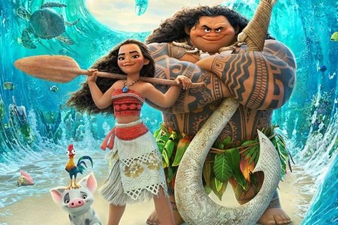
PARTICIPAÇÕES ESPECIAIS
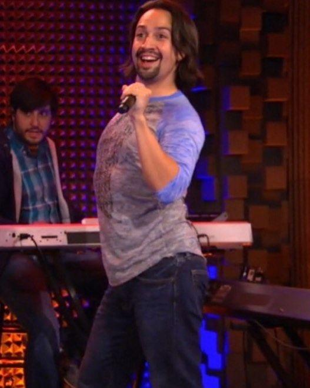
Os miseráveis, Mary Poppins, Modern Family, Brooklyn 99, How I Met Your Mother.
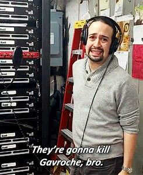 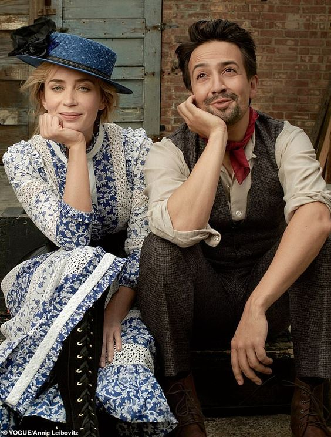 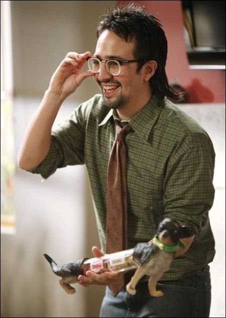 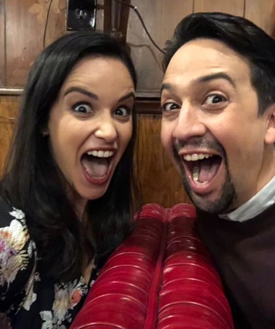 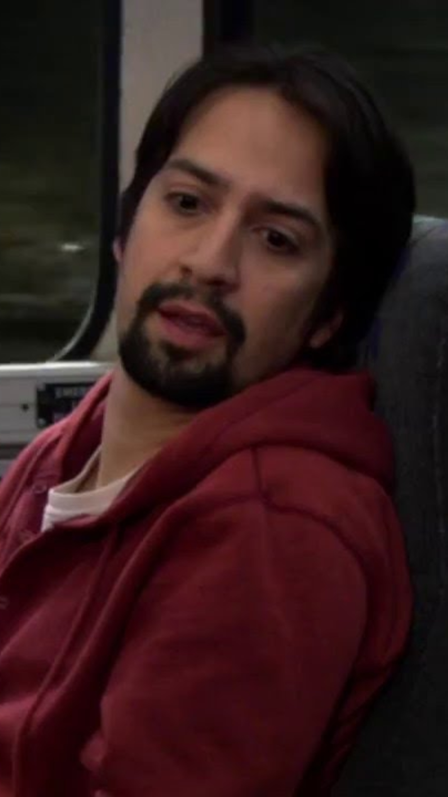
LIN MANUEL MIRANDA: O COLEHO
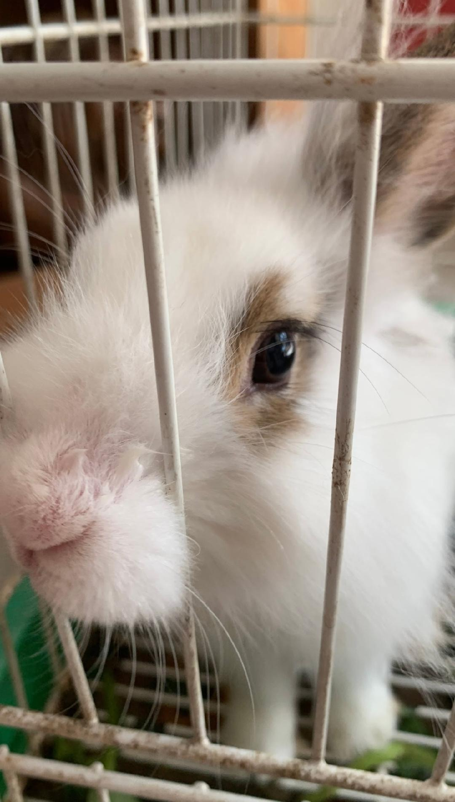 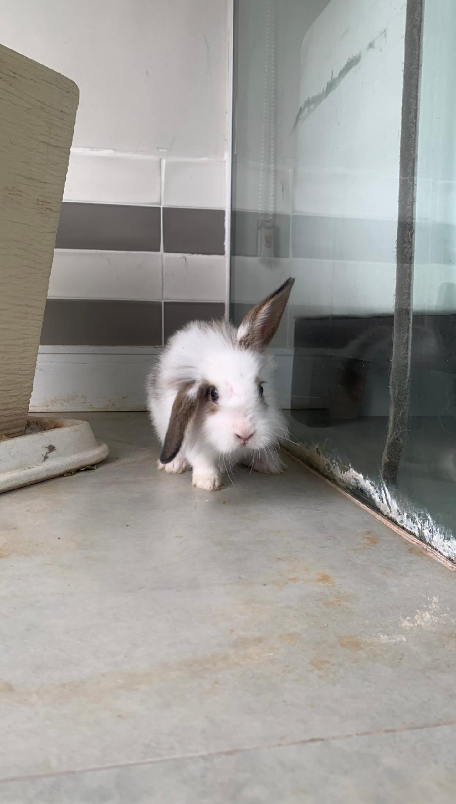 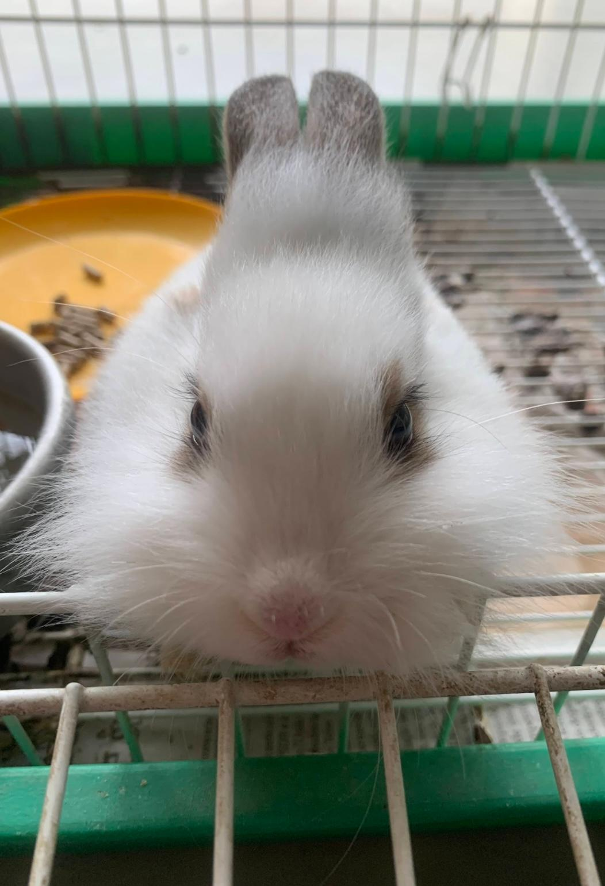 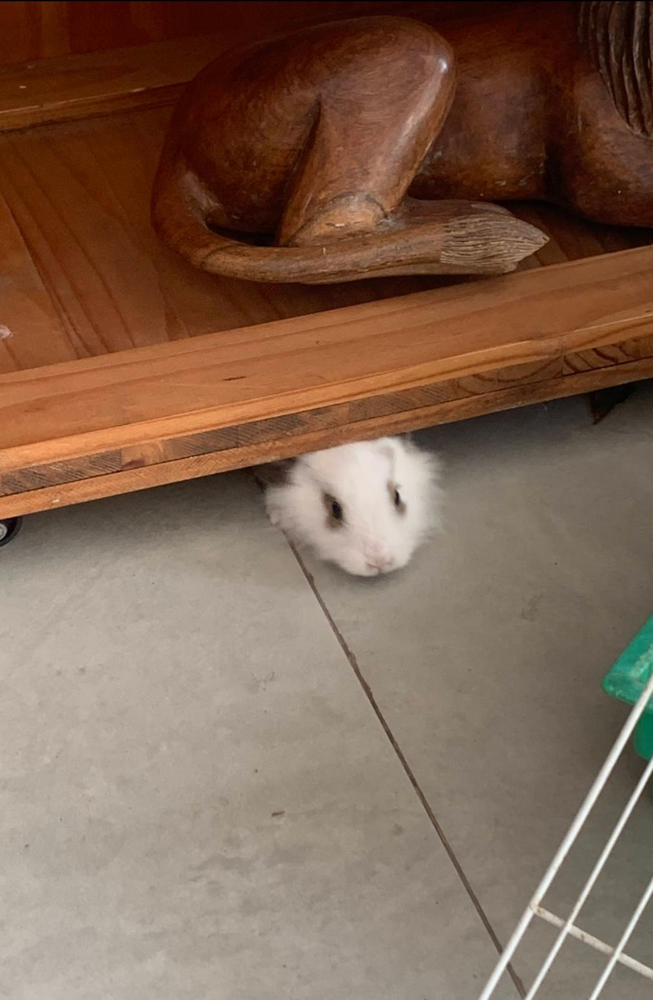